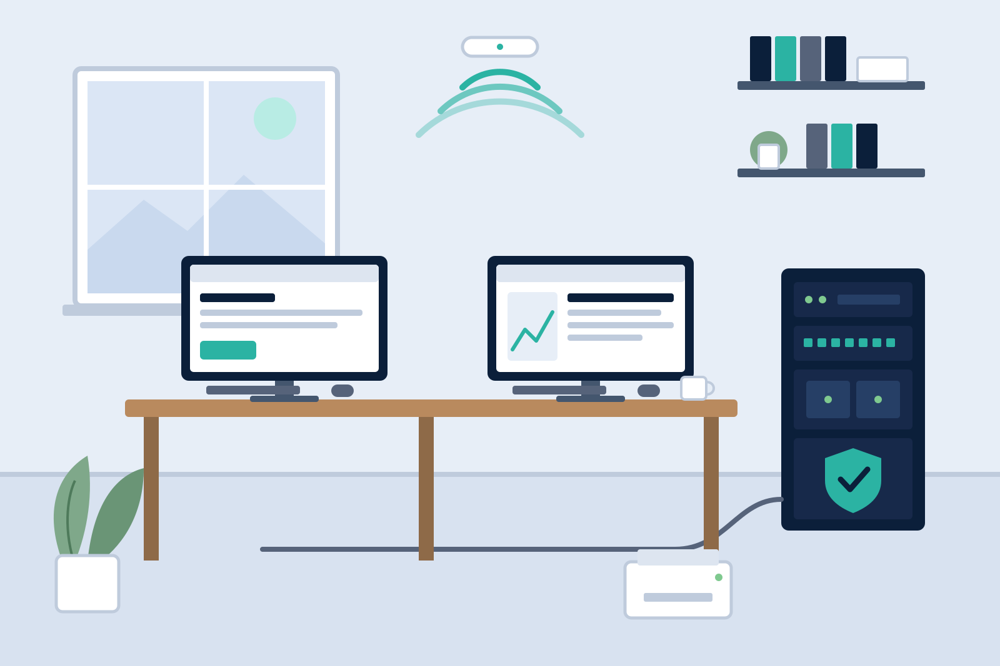

IT-Betreuung für kleine Unternehmen in Mannheim
Für Praxis, Kanzlei, Handwerk, Laden und Büro: Ich übernehme Ihre IT-Betreuung im Wartungsvertrag, wenn Sie keinen eigenen IT-Mitarbeiter haben. Gern auch außerhalb Ihrer Öffnungszeiten.
Für Unternehmen ohne eigene IT-Abteilung
Große Firmen haben eine eigene IT-Abteilung. In kleinen Unternehmen übernehme ich diese Rolle als externe IT-Abteilung, schon ab einem Arbeitsplatz.
Als Einzelunternehmer bin ich immer Ihr direkter Ansprechpartner, am Telefon und vor Ort.
Ich bin zum Beispiel für Arzt- und Zahnarztpraxen da, für Kanzleien und Steuerbüros, für Handwerksbetriebe, Läden und Gastronomie, für Pflegedienste und Vereine und für Selbstständige im Homeoffice.

Was ich für Unternehmen übernehme
Alles im Rahmen Ihres Wartungsvertrags.
-
Arbeitsplätze einrichten
Ich richte neue Rechner ein und statte neue Mitarbeitende vollständig aus. Verlässt jemand das Team, schließe ich die Zugänge sauber.
-
Netzwerk & WLAN
Ich richte Ihr Netzwerk ein, mit eigenem Gästenetz für Kunden, WLAN in jedem Raum und aufgeräumter Verkabelung.
-
Microsoft 365 & E-Mail
Postfächer, Kalender und gemeinsame Ablage, auch beim Umzug vom alten Anbieter. Ihr Team bekommt eine Einweisung.
-
Datensicherung & NAS
Ich richte eine automatische Sicherung ein und spiele die Wiederherstellung einmal mit Ihnen durch. So wissen Sie sicher, dass sie funktioniert.
-
Drucker & Multifunktionsgeräte
Im Netzwerk eingebunden, Scans landen direkt im Postfach oder im richtigen Ordner. Auch vom Handy aus.
-
IT-Sicherheit
Virenschutz, Updates, Passwörter und Zugriffsrechte. Auf Wunsch zeige ich Ihrem Team, wie es gefälschte E-Mails sicher erkennt.
-
Zeiterfassung
Digitale Zeiterfassung, die zu Ihrem Betrieb passt: am Terminal, am Rechner oder per App. Mit Einweisung fürs Team und abgestimmt mit Ihrem Lohnbüro.
-
E-Rechnung
Ich richte XRechnung oder ZUGFeRD in Ihrer Software ein und stimme den Ablauf mit Ihrem Steuerbüro ab.
-
Umzug & Neueröffnung
Ich ziehe Ihre Technik mit um. Internet und Netzwerk laufen schon vor dem ersten Arbeitstag.
-
Regelmäßige Wartung
Meistens einmal im Quartal: Updates, Virenschutz, Datensicherung, Festplatten und Reinigung. Danach bekommen Sie einen kurzen Bericht.
-
Laufende Betreuung
Ein fester Ansprechpartner, schnelle Hilfe per Fernwartung und Termine vor Ort, im Rahmen Ihres Wartungsvertrags.
-
Webseiten
Mobil bedienbar, schnell, mit Impressum und Datenschutz nach deutschem Recht. Auf Wunsch mit Domain und Hosting, für Vertragskunden zum Festpreis.
Bestandsaufnahme, Vorschlag, Umsetzung
Bestandsaufnahme
Ich komme in Ihren Betrieb und sehe mir an, was da ist und was Sie vorhaben. Das dauert meistens ein bis zwei Stunden und ist für Sie kostenlos.
Vorschlag mit Preisrahmen
Sie bekommen schriftlich, was ich empfehle, welcher monatliche Betrag sich für Ihren Betrieb ergibt und was zurückgestellt werden kann. Auch der Vorschlag ist kostenlos und unverbindlich. Sie entscheiden.
Umsetzung und danach
Umbauten lege ich möglichst außerhalb Ihrer Öffnungszeiten. Danach betreue ich Ihren Betrieb im Wartungsvertrag.
Wartungsvertrag für Ihren Betrieb
Für Unternehmen arbeite ich ausschließlich im Wartungsvertrag. So ist Ihre IT laufend betreut und Sie wissen jeden Monat, womit Sie rechnen.
Der Preis liegt bei 99 € je Arbeitsplatz und Monat, der Mindestbetrag bei 199 €. Ein Arbeitsplatz ist ein Mitarbeiter mit seinem Computer oder Notebook. Server, Netzwerk und weitere Geräte kommen je nach Bedarf dazu; den Betrag stellen Sie unten für Ihren Betrieb zusammen. Zzgl. 19 % USt. Drei Stunden sind inklusive. Was über die drei Stunden hinausgeht, berechne ich mit 49 € netto pro Stunde. Der Vertrag läuft mindestens drei Monate, danach ist er monatlich kündbar.
- Wartungstermin einmal im Quartal: Updates, Virenschutz, Datensicherung, Festplatten und Reinigung, danach ein kurzer Bericht.
- Überwachung: Ich behalte Datensicherung, Festplatten, Virenschutz und Zertifikate im Blick. Fällt etwas auf, merke ich es meistens vor Ihnen.
- Updates: Windows, Programme, Router und Firewall halte ich aktuell.
- Geprüfte Datensicherung: Ich teste, ob sich Ihre Daten wirklich zurückholen lassen.
- Drei Stunden inklusive, zum Beispiel für ein neues Postfach oder einen neuen Mitarbeiter.
- Vorrang bei Störungen: Vertragskunden werden bevorzugt bearbeitet.
Was das für Ihren Betrieb bedeutet
Monatsbetrag netto zzgl. 19 % USt., ohne Server, Netzwerk und weitere Geräte.
- 1 ArbeitsplatzMindestbetrag, zum Beispiel für Selbstständige im Büro oder Homeoffice199 €
- 3 Arbeitsplätze297 €
- 5 Arbeitsplätze495 €
- 10 Arbeitsplätze990 €
- Vorsteuerabzugsfähig, die Umsatzsteuer ist ausgewiesen.
- Per Überweisung innerhalb von 14 Tagen.
- Abends und am Wochenende ohne Aufschlag.
- In Mannheim ohne Anfahrtspauschale, außerhalb einmal pro Termin nach Entfernung. Fernwartung ohne Anfahrt.
Vertrag für Ihren Betrieb berechnen
Stellen Sie zusammen, was zu Ihrem Betrieb gehört. Die Summe ist eine unverbindliche Kalkulation, den endgültigen Betrag lege ich nach einer kurzen Bestandsaufnahme fest.
-
Arbeitsplätze Ein Mitarbeiter mit Computer oder Notebook · 99 € je Arbeitsplatz und Monat99,00 €
-
Virtuelle Maschinen 10 € je VM und Monat0,00 €
-
Weitere Geräte: Notebooks, Handys & Tablets Zusätzlich zum Arbeitsplatz · 10 € je Gerät und Monat0,00 €
-
Drucker & Multifunktionsgeräte 10 € je Gerät und Monat0,00 €
-
Server 60 € je Server und Monat0,00 €
-
Netzwerkspeicher & NAS 30 € je System und Monat0,00 €
-
Switches, Access Points, Router & Firewalls 5 € je Gerät und Monat0,00 €
-
IoT-Geräte (Kameras, Zutrittsleser, Sensoren) 1 € je Gerät und Monat0,00 €
-
Telefonanlage (Cloud oder vor Ort) 50 € je Anlage und Monat0,00 €
-
Zusätzliche feste Stunden im Monat 3 Stunden sind je Vertrag enthalten. Jede weitere fest gebuchte Stunde: 49 € netto.0,00 €
Unverbindliche Kalkulation, kein Angebot. Der endgültige Betrag steht nach einer kurzen Bestandsaufnahme fest. Geräte im Vertrag überwache ich laufend, Vertragskunden werden bei Störungen bevorzugt bearbeitet.
Größere Vorhaben für Vertragskunden
Für ein neues Netzwerk, einen Umzug oder die Einführung von Microsoft 365 bekommen Vertragskunden auf Wunsch ein schriftliches Festpreisangebot. Webseiten gibt es für Vertragskunden immer zum Festpreis.
Auftragsverarbeitung und Dokumentation
Auftragsverarbeitungsvertrag
Wo ich mit personenbezogenen Daten in Berührung komme, schließen wir auf Wunsch einen Vertrag zur Auftragsverarbeitung nach Art. 28 DSGVO. Geben Sie mir dazu bitte vor Auftragsbeginn Bescheid.
Dokumentation, die Ihnen gehört
Zu jedem größeren Auftrag schreibe ich auf, was wo steht, welche Zugänge es gibt und wohin gesichert wird. So wissen Sie auch ohne mich, was eingerichtet ist.
Wichtig zum Thema Fernwartung
Ich rufe nie unaufgefordert an. Meldet sich jemand so bei Ihnen oder im Team, beenden Sie das Gespräch bitte sofort.
Haben wir eine Fernwartung vereinbart? Hier starten Sie sie.
Was Unternehmen vorher wissen wollen
Ab welcher Betriebsgröße lohnt sich das?
Ab einem Arbeitsplatz. Ein Ein-Personen-Betrieb mit einem Rechner, einem Drucker und einem Postfach ist ein typischer Auftrag. Nach oben liegt die sinnvolle Grenze bei Unternehmen bis 10 Mitarbeitern. Bei größeren Betrieben sage ich Ihnen offen, ob ich der richtige Ansprechpartner bin.
Was kostet die Bestandsaufnahme?
Nichts. Die Bestandsaufnahme in Ihrem Betrieb und der schriftliche Vorschlag mit Preisrahmen sind für Unternehmen kostenlos und unverbindlich. Kosten entstehen erst mit dem Wartungsvertrag.
Rechnen Sie netto oder brutto ab?
Für Unternehmen gelten Nettopreise zzgl. 19 % USt.: der monatliche Betrag des Wartungsvertrags und Stunden über die drei inklusiven hinaus mit 49 € netto. Auf der Rechnung ist die Umsatzsteuer gesondert ausgewiesen und damit für Sie vorsteuerabzugsfähig.
Was gehört zur regelmäßigen Wartung?
Ein fester Termin im Takt Ihrer Wahl, meistens quartalsweise. Geprüft werden Updates für Windows und die Programme, Virenschutz, Datensicherung samt Rückspieltest, Zustand der Festplatten, Router und Access Points sowie Drucker und Verbrauchsmaterial. Dazu die Reinigung der Geräte, damit sie lange halten.
Danach bekommen Sie einen kurzen Bericht, was ich erledigt habe und was als Nächstes ansteht.
Brauche ich dafür einen Wartungsvertrag?
Ja. Für Unternehmen arbeite ich ausschließlich im Wartungsvertrag. Sie stellen online zusammen, was zu Ihrem Betrieb gehört, drei Stunden sind inklusive, weitere Stunden kosten 49 € netto, Mindestlaufzeit drei Monate, danach monatlich kündbar.
Wie schnell sind Sie da?
In der Regel ist ein Termin am selben oder am nächsten Tag möglich. In dringenden Fällen sagen Sie es mir am Telefon, dann priorisiere ich Ihr Anliegen.
Sie erfahren am Telefon verbindlich, wann ich da bin. Vieles erledige ich auch sofort per Fernwartung.
Wann erreiche ich Sie?
Telefonisch täglich von 8 bis 20 Uhr. Wenn ich gerade bei einem Kunden bin, sprechen Sie auf die Mailbox oder schreiben per WhatsApp. Ich melde mich in der Regel innerhalb einer Stunde zurück. Einen Termin machen wir dann aus, gern auch kurzfristig.
Können Sie außerhalb der Öffnungszeiten kommen?
Ja, gern. Früh morgens, abends oder am Wochenende, ohne Aufschlag.
Schließen Sie einen Auftragsverarbeitungsvertrag ab?
Ja. Wo ich mit personenbezogenen Daten in Berührung komme, etwa in einer Praxis oder Kanzlei, schließen wir auf Wunsch einen Auftragsverarbeitungsvertrag nach Art. 28 DSGVO. Bringen Sie gern Ihr eigenes Muster mit.
Übernehmen Sie auch Technik, die jemand anders eingerichtet hat?
Ja. Der erste Schritt ist dann eine kostenlose Bestandsaufnahme: Was steht wo, welche Zugänge gibt es, wohin wird gesichert. Danach wissen Sie selbst, woran Sie sind, auch unabhängig von mir.
Können Sie uns bei der E-Rechnung helfen?
Ja. Eine E-Rechnung ist ein strukturierter Datensatz, den Ihre Software lesen und schreiben können muss. Verbreitet sind XRechnung und ZUGFeRD.
Ich sehe mir an, was Ihr Rechnungsprogramm heute kann, richte das Empfangen und Erstellen ein und stimme den Ablauf mit Ihrem Steuerbüro ab. Wenn Ihr Programm es nicht kann, sage ich Ihnen, welches passt, bevor Sie etwas kaufen.
Kaufen Sie die Geräte für uns ein?
Die Beschaffung übernehme ich gern: Geräte aussuchen, Angebote vergleichen, bestellen, Lieferung prüfen und anschließend alles einrichten. Bestellt wird dabei auf Ihren Namen. So laufen Rechnung, Garantie und Gewährleistung direkt zwischen Ihnen und dem Händler, ohne Umweg über mich.
Die Zeit dafür läuft über die Stunden im Wartungsvertrag, bei größeren Bestellungen auf Wunsch zu einer festen Pauschale. Ich verkaufe keine Hardware und verdiene an keiner Empfehlung mit. Ich schlage vor, was zu Ihrer Arbeit passt.
Sprechen wir über Ihr Unternehmen.
Ein Anruf oder eine kurze E-Mail genügt. Danach wissen Sie, ob ich der Richtige für Sie bin und womit Sie rechnen können.